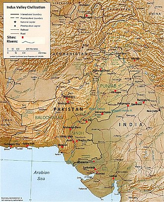
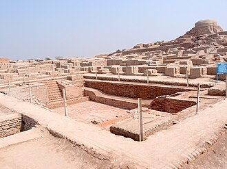

Indus Valley Civilization
The Indus Valley Civilisation also known as Harrapan Civilisation, was a Bronze Age civilisation in the northwestern regions of South Asia, lasting from 3300 BCE
to 1300 BCE, and in its Golden era from 2600 BCE to 1900 BCE. Together with ancient Egypt and Mesopotamia, it was one of
three early civilisations of the Near East and South Asia and the most widespread, its sites spanning an area from much of
Pakistan, to northeast Afghanistan, and northwestern India. The civilisation flourished both in the alluvial plain of the
Indus River, which flows through the length of Pakistan, and along a system of perennial monsoon-fed rivers that once
coursed in the vicinity of the Ghaggar-Hakra, a seasonal river in northwest India and eastern Pakistan.
The term Harappan is sometimes applied to the Indus civilisation after its type site Harappa, the first to be
excavated early in the 20th century in what was then the Punjab province of British India and is now Punjab, Pakistan.
The discovery of Harappa and soon afterwards Mohenjo-daro was the culmination of work that had begun after the founding
of the Archaeological Survey of India in the British Raj in 1861. There were earlier and later cultures called
Early Harappan and Late Harappan in the same area. The early Harappan cultures were populated from Neolithic cultures,
the earliest and best-known of which is in Balochistan, Pakistan. Harappan civilisation is sometimes called
Mature Harappan to distinguish it from the earlier cultures.
The cities of the ancient Indus were noted for their urban planning, baked brick houses, elaborate drainage systems,
water supply systems, clusters of large non-residential buildings, and techniques of handicraft and metallurgy.
Mohenjo-daro and Harappa very likely grew to contain between 30,000 and 60,000 individuals, and the civilisation
may have contained between one and five million individuals during its era. A gradual drying of the
region during the 3rd millennium BCE may have been the initial stimulus for its urbanisation. Eventually it also
reduced the water supply enough to cause the civilisation's demise and to disperse its population to the east.
The 5 major urban centers in the civilisation were Mohenjodaro,Harrapa,Dholavira,Ganeriwala and Rakhigarhi.


Previous Page